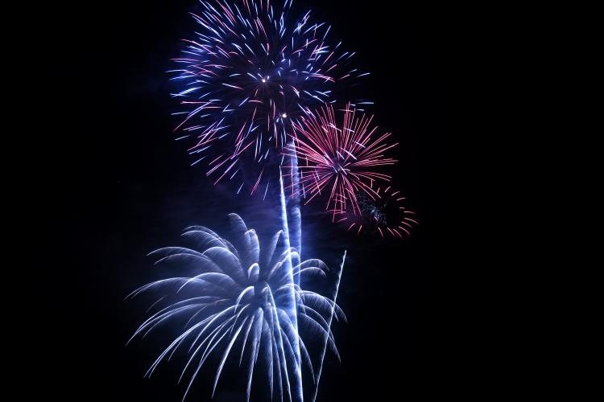
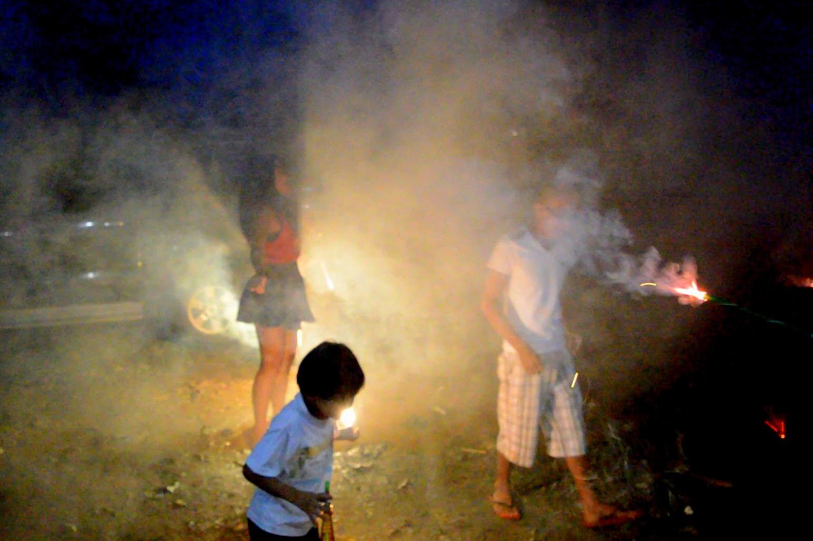
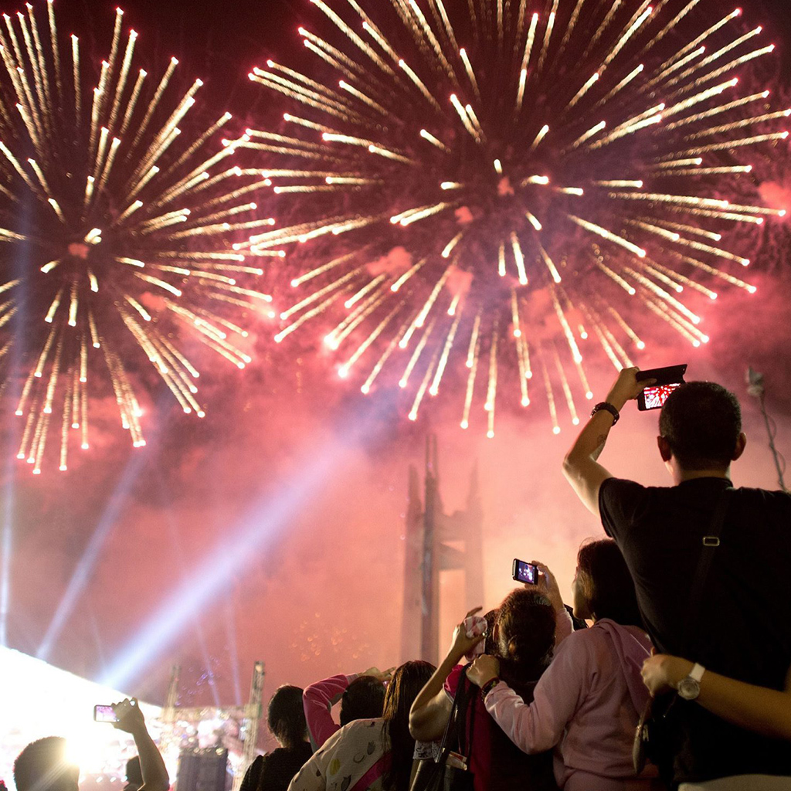

Introduction
New Year's Eve in the Philippines is a vibrant celebration filled with rich traditions and customs that bring families together to welcome the new year with hope and joy.
Historical Background
The celebration of New Year's Eve dates back to pre-colonial times, where Filipinos would hold festivities to celebrate the start of the lunar calendar. Many Filipino people unite on New Year’s Eve, which is on December 31, to celebrate a midnight meal known as the Media Noche. It is also common to stay awake to greet the coming of the New Year. New Year’s Day is also characterized by Filipinos lighting fireworks and making a lot of noise to drive away evil spirits. This belief originated from the Chinese. The elderly encourage children to jump at the stroke of midnight so that they would grow up tall. Many people display 12 circular fruits and wear clothing with polka dots to symbolize money. It is also popular practice to open all the doors and windows at the stroke of midnight to let in the good luck. Many Filipino families also read the Christian bible and attend a church midnight mass. It is common for many Filipinos to blend religion and superstition in celebrating New Year’s Day. The New Year’s Day/New Year’s Eve celebrations start on December 31 and continue through to January 1. New Year’s Day in the Philippines is short but uniquely celebrated throughout the country. This is also the time of the year when many Filipino families get together and strengthen their family ties. New Year’s Day in the Philippines is a joyful holiday that is characterized with the intermarriage of religion and paganism which are the attributes of a once Hispanic Philippine Society.
Modern Traditions
Today, Filipinos celebrate New Year's Eve with various customs, such as fireworks, family gatherings, and the iconic “Media Noche” feast, symbolizing abundance and prosperity for the coming year.
Symbols
Symbolize New Year’s Day with their visions of how the start of the New Year opens opportunities for a bountiful life. This is the reason why the Filipino dining table which is the focal point of this holiday in that the table is abundant with food that comes in round or circular shapes to represent money. Fireworks also symbolize driving away bad luck during New Year’s Day.